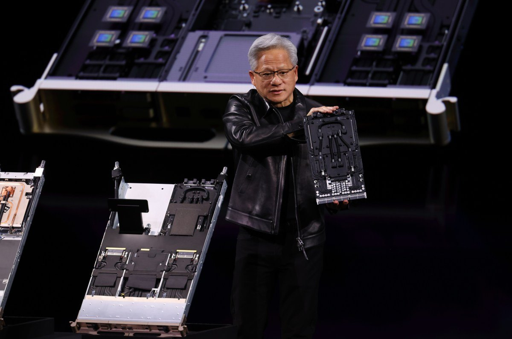

头条 一
DeepSeek 把 App 全套能力开放到 API
DeepSeek 周五宣布，App 背后的能力经 API 开放：联网搜索、深度思考搜索、文件解析、网址读取、安全审查，另有 OCR、语音识别与合成接口，由 V4.1-Flash 支持。官方还放出开源前端示例，称可复刻整个 App。工具另按用量计费，面向公众的应用必须开启安全审查。
以前做聊天应用要自己拼搜索、解析和语音，现在一个账户就够。门槛降了，内容审核和标注的责任仍在开发者身上。
来源：DeepSeek 官方文档
DeepSeek 全家桶 API / 禁运芯片疑云 / Lovable 数据暴露
DeepSeek 把 App 全套能力开放到 API；研究称中国头部开源模型带有 Blackwell 训练痕迹；Lovable 应用被发现大面积暴露敏感数据。
DeepSeek 周五宣布，App 背后的能力经 API 开放：联网搜索、深度思考搜索、文件解析、网址读取、安全审查，另有 OCR、语音识别与合成接口，由 V4.1-Flash 支持。官方还放出开源前端示例，称可复刻整个 App。工具另按用量计费，面向公众的应用必须开启安全审查。
以前做聊天应用要自己拼搜索、解析和语音，现在一个账户就够。门槛降了，内容审核和标注的责任仍在开发者身上。

前 OpenAI 研究员德普分析 DeepSeek、月之暗面、MiniMax 和蚂蚁的开源权重，称 Kimi K3、DeepSeek V4 等带有 Blackwell 芯片训练的痕迹。TechCrunch 提醒，这不等于违反出口管制，芯片可能在马来西亚等海外机房；研究结论也有待独立复核。
管制盯的是芯片卖给谁，不是算力在哪里用。如果结论成立，漏洞就出在“海外机房”这条路上。
德国安全公司 Crissy Field 分析了 15.9 万个 Lovable 项目，其中 24664 个网站无需登录就返回数据库记录。他们在 7403 个站点的表里发现邮箱，并称有应用暴露了 1000 多条证件信息，一个论坛还有 20 多万条聊天消息。研究者说，邮箱比例不等于泄露率。
“不懂代码也能做”的宣传，没有包含数据库权限由谁来查。出事时，责任条款落在用户头上。
马斯克也签了，英伟达财报仍按期发布。
据 PitchBook；创业公司担心资金收紧。
路透统计，这些项目依赖受限芯片。
外交部称毫无根据，反对出口管制。
估值一年翻一倍多，主打企业自管智能体。
谷歌称与专家合作攻克了开放问题。
Verge 评测，定位偏工作场景。
原因未公布，只称大量服务器不可用。
一级因低燃料告警取消捕获，改道溅落。
Destructoid 报道，来自社区汇总。
教学向的最小实现，不是官方代码。
跑分为厂商自报，据转述，待核。
接口一键搭出聊天应用之后，审核、标注和数据权限，哪一项都不会跟着一起送。
禁运看的是芯片卖给谁，训练发生在哪个机房，规则里没有答案。
用户以为平台替自己把了关，条款却写着责任归用户，这个落差迟早要有人买单。